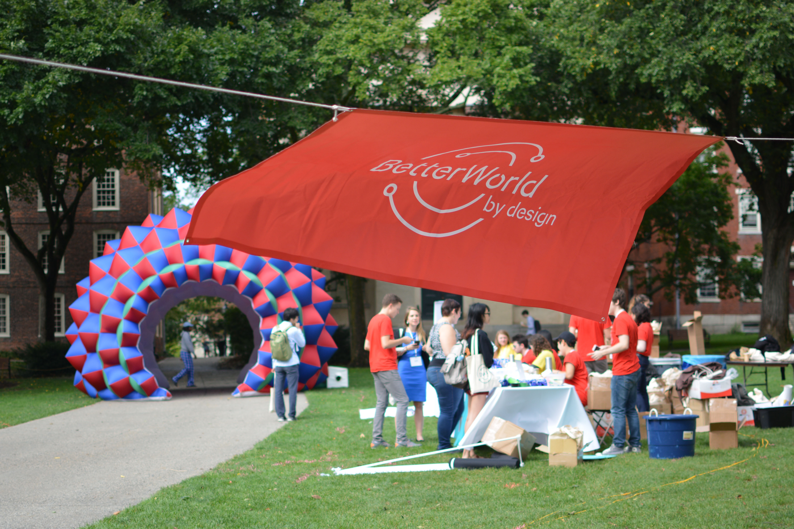
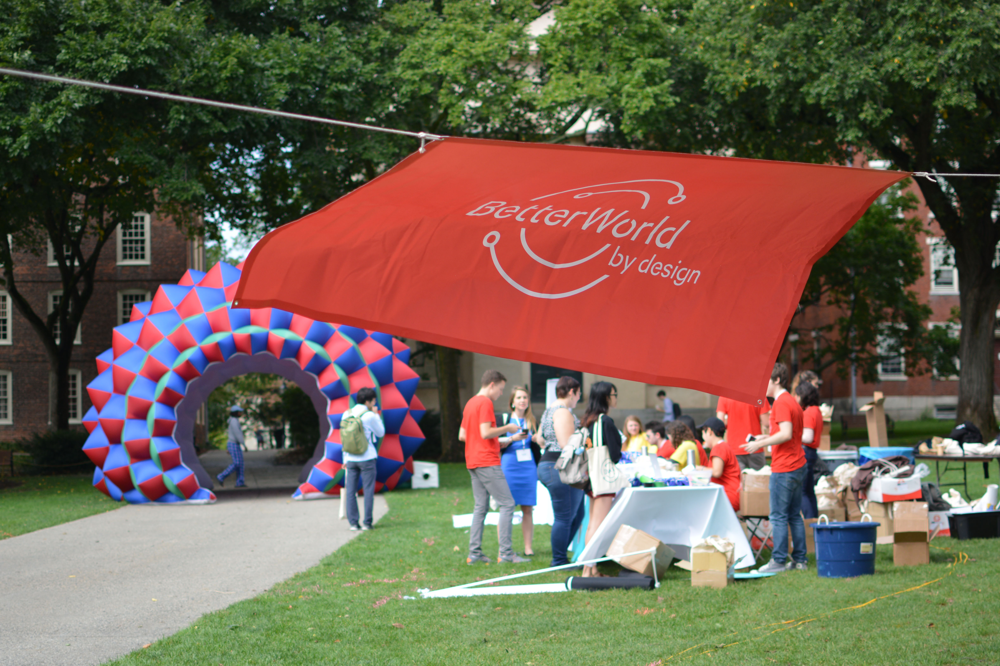

BWxD 2017
Organizing RISD & Brown's Annual Design Conference
2017 Committee Cycle

I was a Community Engagement coordinator for my first year on the Better World by Design committee to plan the largest student-run design conference in nation.
Better World by Design is a student organization consisting of 22 Brown and RISD students who put on a three-day interdisciplinary design conference every Sepetember. We start planning nine months in advance, and organize multiple events throughout the year including workshops, speaker series, and design challenges to generate student engagement in design thinking and creative interdisciplinary practices. Each year, over 50+ presenters and 1000+ attendees fly in from around the world to attend the conferece. In 2017, Better World celebrated it's 10th aniversary as a conference and I worked with two other Brown students on the Community Engagement subcommittee.
As Community Engagement coordinators, we intiatiated a series of community projects for Better World's mission to exist outside of the conference and in our local communinity. We worked with the Providence Children's Museum to host workshops for youth, drafted a Design Challenge with CityArts, put together a small Marketplace for sustainable local businesses and organizations, organized a Design Expo during the conference, and was in charge of Volunteers and Hosting.
The 10th Aniversary Conference

Community Engagement
While Better World's mission is to celebrate interdisciplinary collaboration and design thinking, our goal as a Community Engagement subcommittee was to organize projects where Better World's mission could exist outside of the conference and in our local communinity. Our tasks included volunteer recruitment, running volunteer training sessions, organizing the Design Expo, and hosting community based workshops. We worked with CityArts, the Children's Museum, Providence High Schools, and were in communications with local organizations, artists, startups and other instituions for opportunities to collaborate. Here are some of our projects and successes.
Volunteer Recruitment & Orientation
We selected a 80 out of 100+ applicants as photography, videography, content, and operations volunteers. Instead of google form shift sign ups, we set up SignUpGenius for volunteers and committee members to better keep track of their shifts. We also ran we ran three 2 hour orientation sessions for the selected volunteers with a member of each subcommittee present to explain their tasks.


 


The Design Expo
The Design Expo took place on the second day of the conference. For the first time, the entirety of Brown University’s Main Green was open for local innovators, artists, entrepreneurs, technologists, and designers to showcase their ambitions and projects. We recurited 30 student orgainizations, companies and other institutions to showcase their work at the Expo. Participants included Coding it Forward, SoaPen Inc, and the CMU Integrated Innovation Institue. The Expo is one event in particular that aimed to broaden the horizons of our participants by showing them the different forms that design can take.


The Marketplace
On Thursday, March 16th, Better World hosted one of the inaugural KnowHER Design Talks with the American Institute of Graphic Artists (AIGA) Rhode Island. This series celebrates and highlights the strong females who make up our design industry today. This year, we were excited to have Nazanin Arandi, Creative Director for Netflix, at our event!
In conjunction with this event, we hosted a small marketplace with screenprinting stations outside of the Granoff Center for the Creative Arts on Brown University’s campus, where the talk was be held. This position sits at the intersection of several major arteries on Brown’s campus and there is a significant amount of student traffic between and after classes. We also anticipate that our event with Nazanin will be particularly popular.

Miscellaneous Projects
We were in communications with multiple local organizations regarding community engagement projects and collaborative possibilities. We ran design themed workshops at the Providence Children's Museum. We also launched our first High School Attendee Program for students who are interested in design to attend two days of the conference for free, then sent out, reviewed, and accepted 15 applications.
To further explore the ways design can manifest in our community, we also drafted a design challenge with CityArts, a locally based organization providing after school arts- and project-based learning, to create a design challenge for college students in New England. The challenge was for univeristy students to construct a 5-week Winter Session course based on the following promp: How can we use design-thinking to engage youth in social justice topics? The winning submission will receive prize money from our organization, and teaching experience by engaging with youth in the Providence community. This idea was not fully realized due to our timeline, but it has been passed on to the next year's Community Engagement team.


#BBB #BWxD #BWx10 ❣️